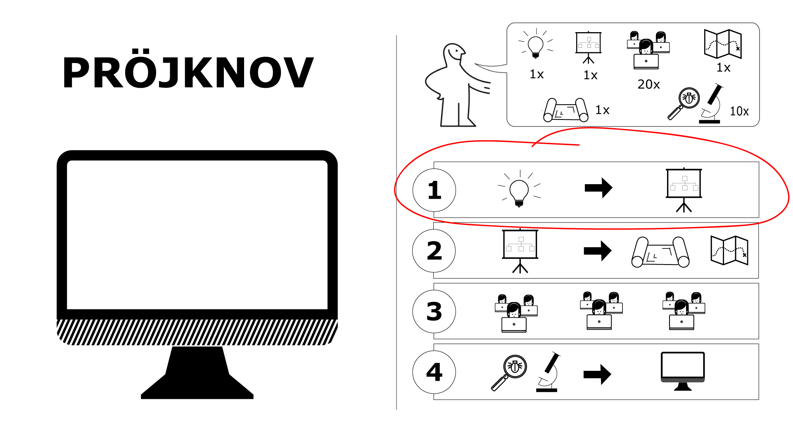
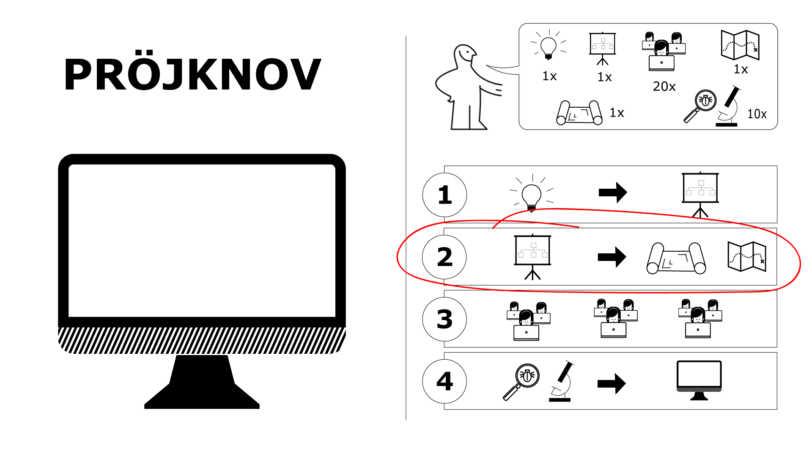
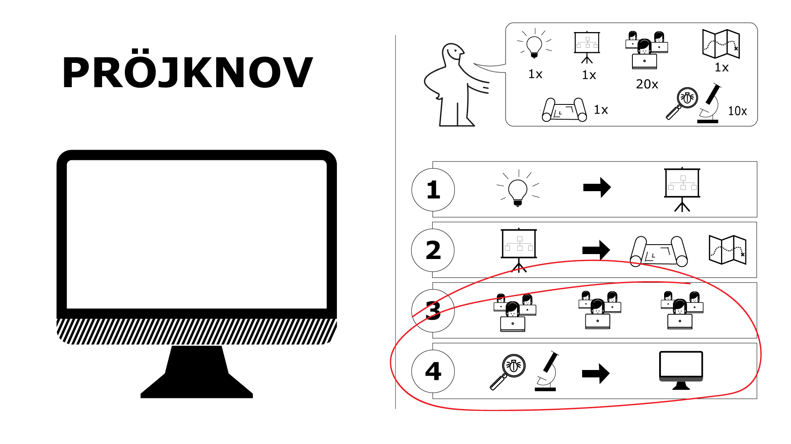
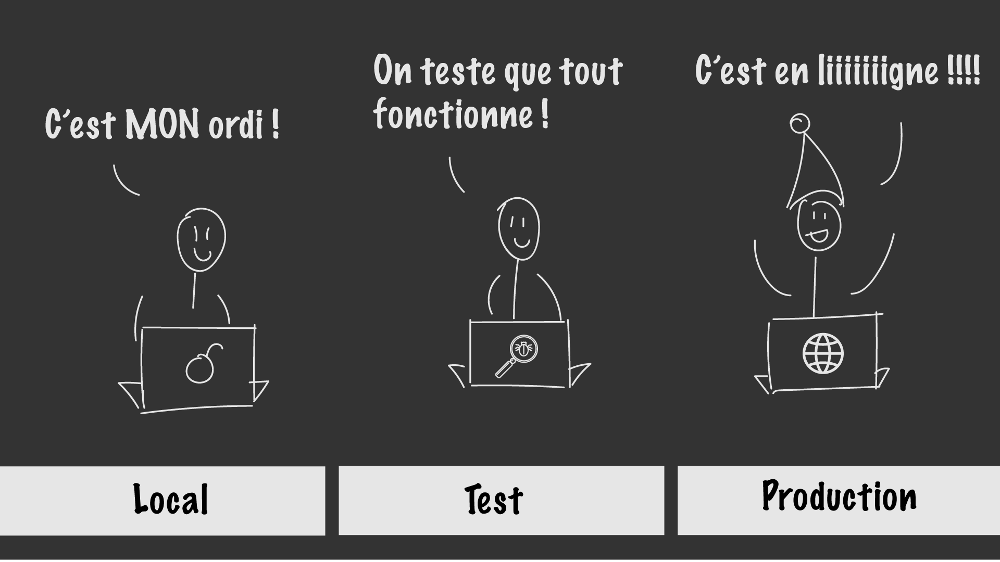

Appliquer les méthodologies séquentielles
Nous avons vu qu’une approche séquentielle supposait produire en amont tous les documents nécessaires au développement d’un projet. Pour rappel, voici les différentes phases suivies :
- Définition du projet : production des spécifications fonctionnelles
- Conception de l’architecture : production des spécifications techniques
- Codage : création du produit demandé
- Recette : tests (automatiques et manuels)
Commençons par réfléchir, avec notre cliente Colette Tatou, aux spécifications fonctionnelles.
- Présentation
- Contenu
- Un auteur (de préférence unique, le chef de projet de la maîtrise d’ouvrage)
- Des scénarios utilisateurs,
- Un aperçu sous forme de diagramme,
- Des détails concernant chaque scénario utilisateur.
- Une décharge disant que ce n’est pas la version finale de la spec, qu’elle évoluera. En effet, il préconise une évolution constante du document qui suit l’avancée du projet. Il s’agit d’un parti pris qui peut être très intéressant dans le cadre de projets impliquant peu d’intervenants (une dizaine de développeurs).
- Des non-buts : non, nous n’allons pas développer cette fonctionnalité. Cela permet de prévenir, en amont, certaines questions.
- Des questions en suspens : les spécifications étant vues par Joël comme un outil d’aide à la décision, il est important d’y inclure les points restés sans réponse ou à tester.
- Des annotations pour certaines équipes : elles seront lues par certaines personnes et ignorées par d’autres. Cela permet de centraliser les questions éventuelles. Par exemple, certaines notes concerneront les rédacteurs de la documentation ou les développeurs.
- Conseils de rédaction
Une spécification fonctionnelle décrit la manière dont un produit fonctionnera, entièrement du point de vue de l’utilisateur. Ici nous ne parlons pas de technique mais bien de fonctionnalités. Quel menu ? Quel écran s’affiche lorsque notre utilisateur entre “Nutella” dans le champ de recherche ?
Elle précise également quels sont les acteurs impliqués dans le projet et leur champ de responsabilité.
Au même titre qu’un cahier des charges, le contenu des spécifications fonctionnelles dépend en grande partie de l’auteur.
Néanmoins, toute spécification fonctionnelle devrait contenir les champs suivants :
Pour Joël Spolsky, le fondateur de Trello et de StackOverFlow (entre autres), les spécifications fonctionnelles sont avant tout un outil d’aide à la décision. Elles doivent décrire tous les scénarios utilisateurs (que se passe-t-il si l’utilisateur oublie son mot de passe ? Ou si la recherche ne donne aucun résultat ?) afin d’aider le plus possible les développeurs. Ces derniers ne devraient pas se poser de questions sur les fonctionnalités mais se concentrer sur les problématiques techniques. Cela les aide à être plus performants et allège les aller-retours avec le client.
Je vous invite à lire son excellent article expliquant cette prise de position et à consulter son exemple de spécifications fonctionnelles.
À l’inverse, les spécifications fonctionnelles des très gros projets seront conséquentes et moins flexibles. Regardez par exemple ce modèle mis à disposition par le conseil de l’Europe. Vous remarquez que la première partie est consacrée à l’historique du projet et aux validations ! Hé oui, dans un très grand projet on a vite fait de perdre la mémoire !
Adaptez-vous à votre audience
Cela peut paraître évident mais vous ne rédigerez pas les mêmes spécifications si votre équipe est composée de 40 développeurs travaillant pour le ministère des finances que si vous officiez chez Google. Ils auront d’ailleurs très certainement un premier document de travail sur lequel vous pourrez vous appuyer.
Keep it stupid, simple
Votre audience a beau être intelligente, elle n’aime pas se poser des questions en lisant vos specs. Pour être efficace, utilisez des phrases courtes qui représentent véritablement votre propos. Évitez les longs paragraphes et, dès que vous le pouvez, préférez un schéma explicatif à une grande description. Tout est plus simple en image !
Soyez drôle
Dans la mesure du raisonnable et en fonction de votre audience, écrivez des specs agréables à lire. En effet, un des grands arguments à l’encontre des specs est que personne ne veut les lire et que, par conséquent, elles ne servent à rien. Mais imaginez si en place et lieu de “l’utilisateur X” vous parlez de Jocelyne Zgara, 20 ans, habitante du merveilleux village Mouilleron-le-captif dans la Loire ? Cela donne tout de suite plus envie de se plonger dans un document de 100 pages, n’est-ce pas ?
Soyez flexible et incluez vos collaborateurs
Dans la mesure du possible, soyez conscient que vos spécifications peuvent évoluer en fonction des retours de votre client et des équipes techniques. Incluez vos collaborateurs pendant le processus de rédaction en leur demandant leur avis et en prenant en compte leurs retours éventuels. Cela les impliquera dans le projet et les motivera pour la suite, tout en vous aidant à améliorer de manière significative vos spécifications.Quand les spécifications fonctionnelles sont rédigées et validées par le client, il est temps de créer les spécifications techniques et de concevoir l’architecture !
Les spécifications techniques décrivent l’implémentation du programme. Quelle va être la base de données ? Son organisation ? Quel langage va-t-on choisir, quel framework ? L’objectif de ce document est de préparer en amont tous les éléments techniques dont les développeurs auront besoin pour coder.
Lorsque le projet suppose la création, à partir de zéro, d’un nouveau programme, les spécifications techniques se concentrent sur tous les éléments nécessaires à cette mise en place.
Mais parfois ce nouveau programme s’inscrit dans un système qui existe déjà. Par exemple, ajouter l’inscription à une newsletter sur le site des impôts. Dans ce cas, les spécifications techniques font également lieu de documentation : elles expliquent comment fonctionne le système actuel et comment les développeurs peuvent interagir avec l’existant.
Dans tous les cas, la première partie est, en général, dédiée à l’architecture générale du projet. Nous y retrouvons notamment le schéma d’architecture, c’est à dire l’organisation des serveurs qui permettra aux utilisateurs d’accéder aux données. Les parties suivantes entrent dans le détail et varient selon la taille du projet.
Je suis certaine que vous mourez d’envie de voir un exemple ! Cela tombe bien, le site du conseil de l’Europe (encore lui !) a mis à disposition un modèle de spécifications techniques important et bien structuré. Je vous invite à le lire puis à revenir vers ce cours.
- Architecture technique générale
- Batchs / Interfaces
- Description des données
- Description du code
- Plateforme matérielle
Si vous ouvrez le modèle de spécifications techniques dont je vous ai donné lien quelques lignes plus haut, vous y retrouverez une présentation générale du projet et un schéma d’architecture (page 6).
Nous pourrions également y lire un éventuel schéma UML (pour la base de données) et toute information qui s’appliquerait au projet de manière globale (les langages choisis par exemple).
Un batch est un “traitement par lots”. C’est un bien grand mot pour désigner une tâche qui est effectuée automatiquement sur un ensemble de données. Par exemple, envoyer un mail à tous les étudiants de votre promo pour les informer de la prochaine soirée “Video killed the radio star” ! Ici l’auteur spécifie, notamment, les traitements éventuels des données entrantes (les mails dans notre exemple) et des données sortantes (les messages envoyés).
Ici nous détaillons la manière dont nous allons utiliser les données. Par exemple, comment modifie-t-on le nom d’un aliment ? Sous quel format ? Comment Nadine met-elle un aliment en favoris ?
Nous voyons dans cette section notamment la version du langage utilisé, du framework et des guides de style (quelle est la règle pour écrire une variable, déclarer une nouvelle fonction, …).
Cette section se concentre sur l’aspect matériel (hardware) du projet. Attend-on beaucoup de trafic et, par conséquent, doit-on prévoir des performances élevées ? Va-t-il y avoir beaucoup de calculs à traiter ? Quelle mémoire vive est nécessaire ? Etc.
Notre projet étant maintenant bien détaillé, nous pouvons passer le relais aux développeurs qui vont se mettre à coder.
Nos développeurs sont sur les starting blocks, les doigts sur leurs claviers, les yeux rivés sur vous ! Vous donnez le top du départ. Prêt·e·s ? … Partez !
- Développement
- Recette
- Livraison
Collaborer
Contrairement au mythe, les développeur·se·s travaillent rarement seul·e·s au fond d’une cave, entourés de cadavres de bières, de pizza froide et de café. Ils travaillent en équipe et sont donc amenés à collaborer les uns avec les autres. Hé oui ! Un développeur est aussi un animal social. ;-)
Mais comment collaborer quand on travaille sur un projet partagé par toute une équipe ? Et comment le développeur peut-il être certain que le code sur lequel il travaille est bien la dernière version disponible ?
Finalement, nous avons tous connu ce problème. Nous accumulons les versions de différents documents (“Mémoire v1.doc, Mémoire v1 def.doc, Mémoire def def.doc” etc) pour garder une copie de l’ancien, en attendant que notre document soit corrigé ou tout simplement “au cas où”.
Les développeurs étant également des êtres pragmatiques, ils ont inventé Git, un outil de gestion de versions. Concrètement, Git vous permet de revenir à une version précédente si vous le souhaitez ainsi que de voir l’auteur de toute modification. Très pratique quand on travaille en équipe !
Le miroir de la réalité
Quand un développeur a terminé de développer une fonctionnalité il l’envoie sur un serveur de test (parfois appelé “staging” ou “préprod” pour les intimes). Il s’agit d’un environnement qui ressemble à 100% à celui de production.
La période de recette peut être assez longue pour les projet fonctionnant en séquentiel. En effet, il faut tester toutes les fonctionnalités dans les moindres détails ! Elles doivent correspondre point pour point aux spécifications fonctionnelles et techniques qui ont été signées précédemment.
Les acteurs qui interviennent pendant cette étape s’appellent les responsables qualité (ou QA managers). Ils sont responsables de la vérification.
Contrairement à ce que nous pourrions imaginer, la majorité des tests est automatique, effectuée par un robot 🤖 (mais codée par un humain !). Il existe deux sortes de tests : les tests unitaires et les tests d’intégration.
Tests unitaires
Les tests unitaires vérifient qu’une petite partie d’une fonctionnalité est bien implémentée. Par exemple, nous pouvons vérifier qu’un numéro de téléphone sous la forme “0000000000” sera bien refusé par le système et ne sera pas enregistré dans la base de données. Vous pouvez lire un exemple de test unitaire dans cet article : Unit Testing in Ruby.
Tests d’intégration
Les tests d’intégration ont pour but de vérifier que les fonctionnalités sont bien interconnectées et que l’ensemble est homogène. Chaque fonctionnalité ayant probablement été développée par un développeur différent, il est nécessaire de vérifier qu’elles communiquent bien entre elles et qu’il n’y a pas de bug. Si notre programme s’insère dans un autre système, les tests d’intégration vont également vérifier que l’un et l’autre s’agencent harmonieusement et que notre programme ne crée pas de troubles dans l’ancien système. Prenons un exemple. Imaginons que nous ajoutons une boutique sur le site de la NASA. C’est une révolution : vous pouvez désormais réserver un aller pour la Lune (personne ne parle du retour…) et payer en ligne. Nous commençons par tester que l’utilisateur ne peut pas rentrer un faux numéro de carte bleue. Il s’agit d’un test unitaire. Puis nous vérifions que la fonctionnalité “ajouter un produit dans le panier” interagit bien avec la fonctionnalité “payer via Paypal”. Nous faisons cela via les tests fonctionnels. Enfin, nous vérifions que notre nouvelle boutique est bien intégrée au site officiel et qu’elle ne génère pas de nouveaux bugs. Ceci est également fait via des tests fonctionnels.
Tests manuels
Certaines équipes font également des tests manuels, c’est-à-dire qu’ils vont exécuter eux-mêmes les scénarios utilisateurs. Par exemple, la personne effectuant la recette va ajouter “voyage sur la lune” au panier, cliquer sur ce dernier, payer en carte bancaire et quitter le site.
Quand tous les tests sont positifs, on livre le projet au client. C’est ensuite à lui de décider s’il met en ligne lui-même ou s’il fait appel à la même équipe.
Cette partie du projet devrait être la plus valorisante. Pourtant, c’est assez rarement le cas lorsque notre projet s’organise autour de méthodologies séquentielles. En effet, notre client découvre le rendu à la toute fin et souvent après une longue période de temps. Ses idées ont pu changer, il ne pensait pas que ce qu’il avait imaginé ressemblerait à ça dans la vraie vie du monde véritable.
De plus, les fonctionnalités peuvent être plus ou moins bien écrites et, par conséquent, applicables. Suivre les spécifications à la lettre peut créer des programmes bancales, d’autant plus si aucune personne technique n’a été consultée.
Alors comment intégrer les retours du client au fur et à mesure ? Vous connaissez déjà la réponse. Hé oui, souhaitons la bienvenue aux méthodologies agiles !